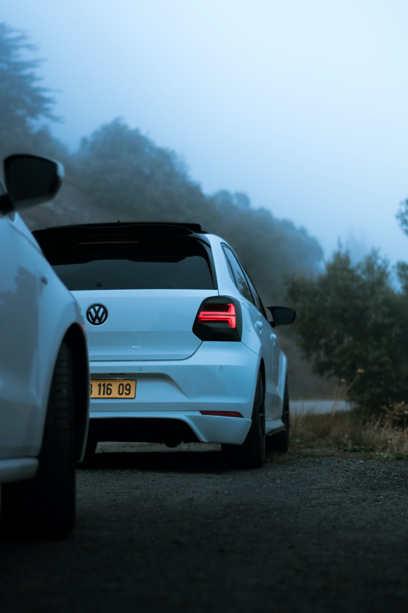

Table below shows model names and sales of 3 (not mentioned on the main,
previous page) best-selling VW vehicles as of 2021, based on global sales:
Popular VW Models
Volkswagen:
Sales:
Bestselling color:
Polo
25 m.
White
T-Roc
17 m.
Black

Fig.1 - VW Polo
Other popular models include: Touareg, Amarok, Caddy.
Touareg
The Volkswagen Touareg is a mid-size luxury SUV with seating for up to
five people. It offers a comfortable ride, a spacious interior, and
strong performance from its available V6 or V8 engine. Standard features
include a panoramic sunroof, heated front seats, and a touchscreen
infotainment system with Apple CarPlay and Android Auto.
8.3.2023
Amarok
The Volkswagen Amarok is a mid-size pickup truck with seating for up to
five people. It offers a comfortable ride, a spacious interior, and a
powerful diesel engine. Standard features include a touchscreen
infotainment system with Apple CarPlay and Android Auto, and automatic
emergency braking. It competes with the likes of the Toyota Hilux and
Ford Ranger.
8.3.2023
Caddy
The Volkswagen Caddy is a small commercial van available in passenger
and cargo configurations. It offers a practical and versatile interior,
fuel-efficient engines, and a range of technology features including a
touchscreen infotainment system, adaptive cruise control, and automatic
emergency braking. It competes with the likes of the Ford Transit
Connect and Mercedes-Benz Citan.
8.3.2023
Polo
The Volkswagen Polo is a subcompact car available in hatchback and sedan
body styles. It offers a fun-to-drive experience, fuel-efficient
engines, and a spacious cabin. Standard features include a touchscreen
infotainment system with Apple CarPlay and Android Auto, automatic
emergency braking, and a rearview camera. It competes with the likes of
the Ford Fiesta and Honda Fit.
.jpg)